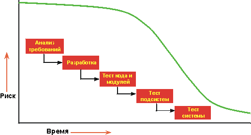
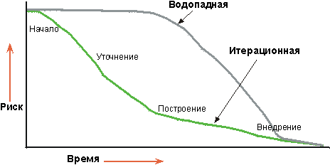

| Итерационная разработка |
 |
|
Что такое итерационная разработка?Проект, в котором применяется итерационная разработка, имеет жизненный цикл, состоящий из нескольких итераций. Итерация включает приблизительно последовательный набор задач бизнес-моделирования, требований, анализа и проектирования, реализации, тестирования и развертывания в различных пропорциях, в зависимости от расположения итерации в цикле разработки. Итерации на начальном этапе и этапе уточнения фокусируются на управлении, требованиях и проектировании; итерации на этапе построения фокусируются на проектировании, реализации и тестировании; а итерации на этапе внедрения фокусируются на тестировании и развертывании. Итерациями следует управлять как timeboxed, то есть расписание итерации следует считать фиксированным и управлять областью содержимого итерации, чтобы она соответствовала этому расписанию. Зачем нужна итерационная разработка?В начальном проекте по отношению к его ключевым требованиям с большой вероятностью будут содержаться ошибки. Позднее обнаружение дефектов проекта приводит к дорогостоящим затратам и, в некоторых случаях, даже к прекращению проекта. Любой проект влечет за собой определенные риски. Чем раньше в жизненном цикле можно проверить отсутствие рисков, тем более точно можно выполнять планирование. Многие риски не удается обнаружить до тех пор, пока не будет предпринята попытка интеграции системы. Невозможно предугадать все риски, независимо от опыта коллектива разработчиков.  В водопадном жизненном цикле невозможно убедиться в отсутствии рисков на ранних этапах жизненного цикла.  В итерационном жизненном цикле вы на основании списка ключевых рисков выбираете инкремент для разработки в итерации. Поскольку в итерации создается протестированный исполняемый продукт, то можно проверить, были ли в результате снижены риски или нет. Преимущества итерационного подходаИтерационный подход в целом имеет преимущество перед линейным или водопадным подходом по целому ряду причин.
Однажды заказчик сказал: "При водопадном подходе все выглядит прекрасно практически до конца проекта, иногда вплоть до середины интеграции. А затем все распадается. При итеративном подходе очень трудно долго скрывать правду." Руководители проектов часто оказывают сопротивление итерационному подходу, считая его бесконечным. В Rational Unified Process итерационный подход полностью управляем; планируется число, продолжительность и цели итераций. Определяются задачи и ответственности участников. Собираются объективные показатели выполнения. От одной итерации к следующей существует некоторый объем повторяющихся действий, однако это также тщательно контролируется. Снижение рисковИтерационный подход позволяет снизить риски раньше, поскольку многие риски обнаруживаются только во время интеграции. При развертывании ранней итерации вы проходите через все разделы, изучая многие аспекты проекта: инструменты, готовое программное обеспечение, навыки сотрудников и так далее. Предполагаемые риски могут не подтвердиться, в то время как могут быть обнаружены новые, неожиданные риски. Интеграция не является одним "большим шоком" в конце - элементы объединяются постепенно. В действительности, итерационный подход представляет собой практически непрерывную интеграцию. То, что является длительным, неопределенным и сложным - что отнимает до 40% общих усилий в конце проекта - и что сложно точно спланировать, делится на от шести до девяти меньших интеграций, которые выполняются с гораздо меньшим числом элементов. Внесение измененийИтерационный подход позволяет учитывать изменения в требованиях, поскольку обычно они будут изменяться по мере работы над проектом. Изменения в требованиях и "смещение" требований всегда являются первичными источниками нарушений для проекта, ведущими к задержке поставок, сбоям в расписании, неудовлетворенности заказчиков и разочарованию разработчиков. Двадцать пять лет назад Фред Брукс написал: "Заранее планируйте выкинуть первую версию - все равно придется." Мнение пользователей будет изменяться по мере продвижения работы над проектом. Такова человеческая натура. Неверным было бы принуждать пользователей принять систему такой, какой они представляли себе первоначально. Мнение пользователей меняется, поскольку меняется контекст - они больше узнают о среде и технологии и видят промежуточную демонстрацию разрабатываемого продукта. Итеративный жизненный цикл обеспечивает управление путем внесения тактических изменений в продукт. Например, для того чтобы составить конкуренцию существующим продуктам, вы можете принять решение выпустить продукт с ограниченным набором функций раньше, для того чтобы опередить действия конкурента, либо можно адаптировать другого вендора для данной технологии. Итерации также поддерживают технологические изменения по мере продвижения работы над проектом. Если какая-либо технология изменяется или становится стандартом при появлении новой технологии, то это может дать проекту определенные преимущества. Это в особенности относится к изменениям платформы и изменениям инфраструктуры на более низких уровнях. Достижение более высокого качестваИтерационный подход позволяет получить более устойчивую архитектуру, поскольку ошибки исправляются на протяжении нескольких итераций. Первые дефекты обнаруживаются уже в первых итерациях продукта. Обнаруживаются узкие места в производительности, которые можно исправить сразу, а не непосредственно перед доставкой. Итерационная разработка, в отличие от выполнения тестов в конце проекта, позволяет протестировать продукт более тщательно. Наиболее важные функции можно протестировать в нескольких итерациях. Обучение и улучшениеРазработчики могут обучаться по мере продвижения работы, и различные умения и специализации более полно используются в течение всего жизненного цикла. Тестеры, вместо длительного ожидания, в течение которого они только строят планы и оттачивают свои навыки, начинают выполнять тестирование раньше, раньше начинается создание технической документации и так далее. При оценке ранних итераций можно обнаружить необходимость в дополнительном обучении или помощи извне. Также можно улучшить сам процесс. Оценка в конце итерации не только дает обзор состояния проекта с точки зрения планирования продукта, но также позволяет проанализировать, что необходимо изменить в организации и проекте для улучшения работы в следующей итерации. Увеличение возможностей повторного примененияИтерационный жизненный цикл облегчает повторное применение. Облегчается идентификация стандартных компонентов, если они разрабатываются или реализуются по-отдельности, по сравнению с идентификацией всей общности. Идентификация и разработка многоразовых компонентов является сложной задачей. Обзоры проекта в ранних итерациях позволяют архитекторам программного обеспечения обнаружить возможность потенциального повторного применения, и в последующих итерациях они могут далее разрабатывать и развивать этот стандартный исходный код. Применение итерационного подхода облегчает использование преимуществ коммерческих готовых продуктов. На протяжении нескольких итераций можно выбрать такие продукты, интегрировать их и убедиться, что они соответствуют данной архитектуре. |
© Copyright IBM Corp. 1987, 2006. Все права защищены.. |